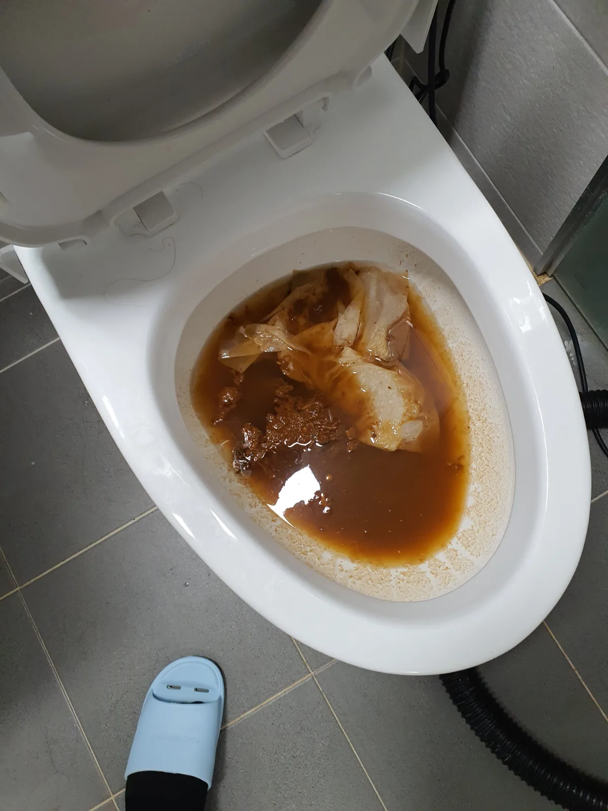

광진구 화양동 변기막힘, 현장 도착 후 진단
광진구 화양동 변기막힘 긴급 요청을 접수한 뒤 전문 장비를 준비해 신속하게 현장으로 출동했습니다.
현장을 확인해보니 변기 안에 오수와 휴지가 그대로 고여 있었으며, 물을 추가로 내리면 넘침과 바닥 오염으로 이어질 수 있는 상태였습니다. 단순한 휴지 막힘으로 판단해 무리하게 밀어 넣기보다, 변기 내부에 물에 녹지 않는 이물질이 걸렸을 가능성을 고려해 석션 작업을 진행했습니다.
1단계: 증상 확인과 필요한 장비 작업
먼저 변기 안에 차 있던 오수와 이물질을 전문 석션 장비로 흡입하며 내부 압력을 조절했습니다. 변기 트랩은 굴곡진 구조로 되어 있어 탐폰이나 물티슈처럼 물에 풀리지 않는 물건이 들어가면 중간에 걸린 채 휴지와 오물을 계속 붙잡을 수 있습니다.
이런 상황에서 관통 작업으로 이물질을 배관 안쪽으로 밀어 넣으면 오수관막힘으로 문제가 확대될 가능성이 있기 때문에, 회수할 수 있는 이물질은 밖으로 꺼내는 방식이 중요합니다.

2단계: 원인 구간 처리와 정상 작동 확인
석션 작업을 이어가며 변기 내부에 걸려 있던 이물질을 끌어냈고, 막힘의 원인이었던 여성용 위생용품인 탐폰을 회수했습니다.
원인이 제거된 뒤에는 물을 여러 차례 내려보며 배수 속도와 수위 변화를 확인했습니다. 휴지와 물이 정체되지 않고 원활하게 빠지는 것을 점검한 후 광진구 화양동 변기막힘 작업을 마무리했습니다.

작업 결과와 재발 방지 안내
탐폰은 크기가 작아 보여도 물에 녹지 않고 수분을 흡수하면 부피가 커지기 때문에 변기 내부 굴곡이나 오수관 입구에 걸릴 수 있습니다. 탐폰을 비롯한 생리대, 물티슈, 청소포 등은 반드시 휴지통에 버리는 것이 좋습니다.
신라건축설비는 변기막힘·싱크대막힘·하수구막힘을 전문적으로 처리하며, 현장 상태에 따라 석션·관통·내시경검사·샤프트·고압세척 등 적합한 장비와 공법을 선택합니다. 서울 전 지역과 경기권에 신속하게 출동하며, 단순 생활 막힘부터 공용배관과 오수관 문제 및 배관 보수공사까지 대응하고 있습니다.
최종 조치: 석션 장비로 변기 내부에 걸린 탐폰을 안전하게 회수한 뒤 반복 통수검사를 진행해 배수가 정상적으로 이루어지는 것을 확인했습니다.
현장 방문 전 확인하는 비용과 작업 범위
신라건축설비는 현장 증상과 배관 구조를 확인한 뒤 필요한 작업과 예상 비용을 안내합니다. 단순 관통으로 해결되는지, 배관내시경·석션·고압세척 또는 변기 탈거가 필요한지는 현장 상태에 따라 달라집니다. 출장비와 야간 작업비, 추가 장비 비용이 발생할 수 있는 경우 작업 전에 먼저 설명하고 동의를 받은 범위에서 진행합니다.
업체를 선택할 때 확인할 사항
무조건적인 ‘0원’ 표현보다 실제 작업 범위, 추가 비용 조건, 사용 장비와 사후 대응 기준을 확인하는 것이 중요합니다. 해결되지 않았을 때의 비용 기준과 작업 후 동일 증상 발생 시 점검 범위를 사전에 문의해두면 불필요한 분쟁을 줄일 수 있습니다.
광진구 변기막힘 자주 묻는 질문
변기막힘은 왜 반복되나요?
광진구 화양동 현장처럼 변기 물을 내려도 오수와 휴지가 빠지지 않고 변기 내부에 그대로 차오르는 막힘 증상이 발생했습니다. 증상은 원인이 현장마다 다를 수 있습니다. 변기 내부 이물질뿐 아니라 하부 오수관 막힘이나 배관 상태 때문에 반복될 수 있습니다. 같은 변기막힘이 재발하면 막힌 위치와 원인을 다시 확인하는 것이 중요합니다.
변기 물이 안 내려가거나 역류하면 변기뚫는업체를 불러야 하나요?
물이 천천히 내려가거나 수위가 차오르고 변기역류가 반복되면 단순 뚫어뻥보다 전문 장비 점검이 필요한 경우가 있습니다. 현장에서는 증상과 배관 구조를 먼저 확인합니다.
변기 이물질 막힘은 변기를 탈거해야 하나요?
물티슈·청소포·플라스틱·음식물처럼 변기 트랩에 걸린 이물질은 위치에 따라 변기 탈거가 필요할 수 있습니다. 무조건 탈거하지 않고 먼저 막힘 위치를 판단합니다.
변기뚫는업체는 어떤 장비로 작업하나요?
현장 상태에 따라 석션, 에어건, 배관내시경, 변기 탈거 등을 사용합니다. 하부 오수관 문제라면 변기만 뚫는 작업보다 배관 구간 확인이 중요합니다.
변기막힘 비용은 어떻게 정해지나요?
단순 관통인지, 이물질 제거와 변기 탈거가 필요한지, 오수관이나 공용배관 작업이 필요한지에 따라 달라집니다. 추가 장비나 작업이 필요하면 진행 전에 범위와 비용을 안내합니다.
변기에서 냄새가 나거나 물이 자주 차오르는 것도 막힘과 관련 있나요?
악취나 수위 이상이 항상 막힘 때문인 것은 아니지만 배수 불량, 오수관 상태, 연결부 문제와 함께 나타날 수 있습니다. 반복되면 현장 점검으로 원인을 구분해야 합니다.
변기막힘 서울·경기 출동지역
신라건축설비는 광진구 화양동 현장을 포함해 서울 25개 구와 경기도 31개 시·군의 배관 문제를 상담합니다. 현장 거리와 기사 배정 상황에 따라 출동 가능 여부를 먼저 안내드립니다.
서울 전 지역
강남구 · 강동구 · 강북구 · 강서구 · 관악구 · 광진구 · 구로구 · 금천구 · 노원구 · 도봉구 · 동대문구 · 동작구 · 마포구 · 서대문구 · 서초구 · 성동구 · 성북구 · 송파구 · 양천구 · 영등포구 · 용산구 · 은평구 · 종로구 · 중구 · 중랑구
경기도 주요 출동지역
수원시 · 용인시 · 고양시 · 화성시 · 성남시 · 부천시 · 남양주시 · 안산시 · 평택시 · 안양시 · 시흥시 · 파주시 · 김포시 · 의정부시 · 광주시 · 하남시 · 광명시 · 군포시 · 양주시 · 오산시 · 이천시 · 안성시 · 구리시 · 의왕시 · 포천시 · 양평군 · 여주시 · 동두천시 · 과천시 · 가평군 · 연천군